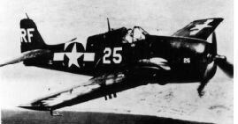
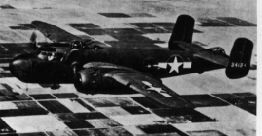
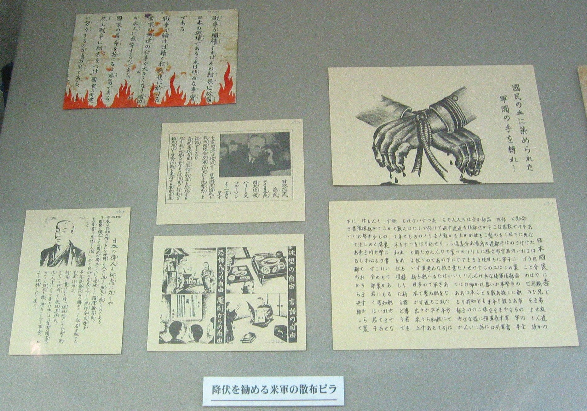

・呉の戦災
１．呉空襲の特色
呉の空襲は米軍の対日戦略目標に従って行われました。
呉港に結集していた帝国海軍連合艦隊ヘの攻撃（1945.3.19.）に始まり、広海軍工廠の航空機工場（5.5.）、呉海軍工廠の造兵器工廠（6.22.）、市街地への夜間無差別焼夷弾爆撃（7.1-2.）、そして、日本本土で沖縄戦と共に唯一本格的な戦争になった呉沖海空戦（7.24-28.）が行われました。

グラマン

ロッキード
空襲は、超航空爆撃機･空の要塞「B29」とグラマンやロッキードなどの「艦載機」によるものに大別されます。
B29爆撃機による空襲は、軍事施設の破壊と一般市民居住地域の焼失を期すアメリカ軍の戦略に従って行なわれました。
5月5日の広海軍工廠･第11海軍航空廠への爆撃、6月22日の呉海軍工廠への爆撃、7月1日-2日の呉市街地への無差別爆撃が、それにあたります。
特に7月1日-2日の呉市街地への無差別爆撃は、3月9日-10日の東京大空襲に始まり日本中の都市を焼き払った非人道的で残虐なジェノサイド(みな殺し爆撃)の一つとして位置づけられるものです。
アメリカ軍は、日本側の「労働力の弱体化」「戦意喪失」を無差別爆撃の大義名分としていましたが、それに対して空襲の恐ろしさを国民に知らせようともせず、バケツリレーによる初期消火などといった方法で立ち向かわせようとした日本側の無策ぶりも被害を大きくした要因です。
艦載機による空襲は、日本海軍の艦隊集結地･兵站へいたん基地としての呉軍港を壊滅させる目的で行なわれました。
3月19日と7月24-28日に呉軍港の日本海軍艦艇を襲ったのは、土佐沖まで接近してきた航空母艦から発進した艦載機群です。
呉は日米両海軍の本格的な戦闘が行なわれた「戦場」となりました。
戦闘には一般市民が巻き込まれ、犠牲を出しました。
その点、呉空襲は沖縄戦と似た性格を持っていると言えます。
米軍による呉空襲の規模
・ 飛来爆撃機数（Ｂ29、艦載機、その他）
・東京 3.129.機 ・大阪 2.670.機 ・呉 2.148.機
・呉空襲機＝2.148機のうち、
第20航空軍･Ｂ29＝470機、艦載機＝1.563機、
沖縄基地（第7，第5軍）＝115機
・ 爆弾投下トン数
・東京 16561トン ・名古屋 14689トン ・大阪 11217トン
・神戸 6174トン ・呉 3820トン
・ 高性能爆弾投下トン数
・名古屋 4068トン ・東京 4000トン ・大阪 3431トン
・呉 2634トン
呉市の防空対策
○横穴式公共防空壕 ２６.０００、工場内 １００ケ所
○盛り土待避壕 ２.８００、工場内 ７０２ケ所
○個人待避壕 ４３.２５６、横穴 １.２００ケ所
○防空法による強制疎開 ６.０５１戸（２４.２０４人）
消防道路３本、小空地８２ケ所
○小学３年以上疎開集団 ４.０６２人（昭２０年４月より）
呉空襲の被害の概略 （県警資料から） 実態は未解明。
死者 市民 2071人 軍人･工員 1629人
重傷 1992人 軽傷 661人 行方不明 67人
家屋 全壊 503戸 半壊 718戸 全焼 22148戸 半焼 139戸
罹災者 126571人
《ちょっとした話題》
1.
呉への原爆投下計画
原爆投下計画の予定都市地図
2.「空からの宣伝戦」

呉で投下された米軍散布ビラ《入船山記念館蔵》
日本の敗色が歴然としだした1945（昭和20）年7月ころから米軍は、
「空からの宣伝戦」を行い始め、多くのビラ（伝単）を投下散布した。
内容は大まかには、１、空襲予告と避難勧告。 ２、軍部批判と今次戦争の意義
３、早期降伏で被害の最小化を勧告。 ４、降伏後の新日本の建設とその基本方向。
などであった。
軍都呉に散布された米軍のビラは、投下後に殆ど回収されていたが、一部隠し持っていたものが、入船山記念館に展示されている。
展示物に説明が一切無いので、詳細は不明だが、学芸員の説明では、左上の赤い炎の付いたビラが呉で投下されたもので、他は不明だとのことであった。
呉に散布されたビラには、次のように記されている。
「戦争が継続すれば、その結果は故国日本の破壊である。これは明白な事実である。
戦争が続けば続く程、戦後に於ける国家の再建の仕事が大きくなり、国力が永久に疲弊するのである。
国家のため、命を捨てるは容易である。
然し、戦争に結末をつけ、国家の再建に努力するのが真の忠である。」
この文章は、日本の国情に通じた日系米人でなければ書けないものであろう。
この伝単（ビラ）は内容からみて、1945（昭和20）年8月14日にB29の１機から
約20,000枚が散布された時のものではないかと推測される。
呉地域に散布された伝単（ビラ）の総数は、広島県警察部の調査では、
1945（昭和20）年３月19日から8月14日の間に、約４回、10数万枚が散布されたという。
トップページに戻る